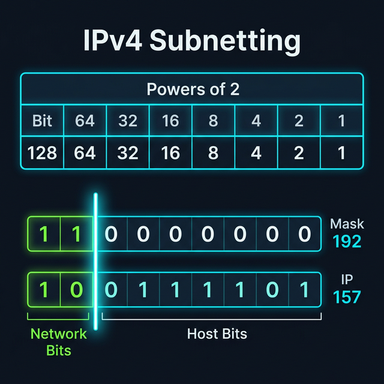

Networking
IPv4 클래스 구분과
서브넷 마스크 한 번에 정리
정처기에서 자주 나오는 IPv4 클래스 구분과 서브넷 마스크 개념을 한 페이지에서 빠르게 복습할 수 있도록 표 중심으로 정리했다.
개요
IPv4 주소는 과거 클래스 기반 주소 체계에서 A, B, C, D, E 클래스로 구분했다.
클래스 구분은 첫 옥텟 범위와
기본 마스크를 같이 기억하면 가장 덜 헷갈린다.
IPv4 클래스 구분
| 클래스 | 첫 비트 | 첫 옥텟 범위 | 주소 범위 | 기본 마스크 | 시험용 설명 |
|---|---|---|---|---|---|
| A | 0 |
0~127 |
0.0.0.0 ~ 127.255.255.255 |
255.0.0.0 |
대규모 네트워크 |
| B | 10 |
128~191 |
128.0.0.0 ~ 191.255.255.255 |
255.255.0.0 |
중규모 네트워크 |
| C | 110 |
192~223 |
192.0.0.0 ~ 223.255.255.255 |
255.255.255.0 |
소규모 네트워크 |
| D | 1110 |
224~239 |
224.0.0.0 ~ 239.255.255.255 |
없음 | 멀티캐스트 |
| E | 1111 |
240~255 |
240.0.0.0 ~ 255.255.255.255 |
없음 | 실험용/예약 |
정처기에서는 A 클래스를 편의상 0~127로 외우는 경우도
많다.
다만 127.x.x.x 대역은 실제로
loopback 용도로 사용된다.
서브넷 마스크
서브넷 마스크는 IP 주소를 네트워크 부분과 호스트 부분으로 구분하기 위해 사용한다.
| 항목 | 설명 |
|---|---|
| 길이 | 32비트(4바이트) |
| 구성 | 연속된 1과 0으로 구성 |
1의 의미 |
네트워크 부분 |
0의 의미 |
호스트 부분 |
예를 들어 서브넷 마스크가 255.255.255.0이면 처음
24비트는 네트워크 부분이고, 나머지 8비트는 호스트 부분이다. 이를
CIDR 표기법으로 /24라고 쓴다.
네트워크 부분이란?
IP 주소를 보면 앞쪽 일부는 "어느 네트워크에 속해 있는가"를 나타낸다. 이 구간이 바로 네트워크 부분이다.
서브넷 마스크에서 1로 잡히는 비트가 여기에
해당하고, 두 IP 주소의 네트워크 부분이 같다면 같은 네트워크로
본다.
255.255.255.0은 /24이므로 앞의
24비트가 네트워크 부분이다. 그래서
192.168.10.5와 192.168.10.20은
앞의 192.168.10이 같아 같은 네트워크에 묶인다.
호스트 부분이란?
네트워크 부분을 제외한 나머지 영역은 같은 네트워크 안에서 각각의 장비를 구분하는 데 쓰인다. 이 구간을 호스트 부분이라고 한다.
서브넷 마스크에서 0으로 표시되는 비트가 호스트
부분이며, 같은 네트워크에 속한 장치들은 네트워크 부분은 같고
호스트 부분은 서로 달라야 한다.
255.255.255.0에서는 마지막 8비트가 호스트
부분이므로, 192.168.10.5와
192.168.10.20은 같은 네트워크 안에 있으면서도
끝자리 값이 달라 서로 다른 장치를 가리킨다.
네트워크와 호스트의 관계
이 둘의 관계를 가장 쉽게 떠올리는 방법은 "동네와 집 번호"로 비유하는 것이다.
네트워크 부분은 여러 주소를 묶는 범위라고 보면 된다. 예를 들어
192.168.1은 하나의 동네처럼 볼 수 있고, 그 안에는
여러 장치 주소가 들어갈 수 있다.
반대로 호스트 부분은 그 동네 안에서 각 장비를 구분하는 번호다. 즉, 같은 네트워크 안에서는 네트워크 부분은 공유하고, 호스트 부분이 달라지면서 각 장치의 위치가 구분된다.
192.168.1.10과 192.168.1.25는
같은 동네(192.168.1)에 있는 서로 다른 집처럼
이해하면 된다. 앞부분은 같고, 마지막 번호만 달라서 서로 다른
장치를 가리킨다.
| 서브넷 마스크 | 이진수 표현 | CIDR | 의미 |
|---|---|---|---|
255.0.0.0 |
1111 1111.0000 0000.0000 0000.0000 0000 |
/8 |
앞 8비트가 네트워크 |
255.255.0.0 |
1111 1111.1111 1111.0000 0000.0000 0000 |
/16 |
앞 16비트가 네트워크 |
255.255.255.0 |
1111 1111.1111 1111.1111 1111.0000 0000 |
/24 |
앞 24비트가 네트워크 |
CIDR 표기법
CIDR는 Classless Inter-Domain Routing의 약자로,
IP 주소와 네트워크 비트 수를 함께 적는 방식이다.
표기 형태는 <IP 주소>/<네트워크 비트 수>처럼
쓴다. 예를 들어 192.168.10.0/24라고 적으면
앞의 24비트가 네트워크 부분이라는 뜻이다.
이 방식은 A, B, C처럼 주소를 딱 잘라 나누던 클래스 기반 구조의 비효율을 줄이기 위해 도입됐다. 필요한 크기만큼 네트워크를 더 유연하게 나눌 수 있어서, 주소 공간을 덜 낭비하게 된다.
CIDR를 쓰면 네트워크 규모에 맞게 주소를 배분할 수 있어서 작은 조직에 너무 큰 주소 대역을 통째로 주는 비효율을 줄일 수 있다.
CIDR의 장점
- 주소 공간을 필요한 만큼 나눠 쓸 수 있어 IP 낭비를 줄이기 쉽다.
- 조직 규모에 맞게 네트워크를 더 유연하게 설계할 수 있다.
- 여러 경로를 묶어 표현하기 쉬워 라우팅 테이블을 더 간결하게 관리할 수 있다.
- 주소 계획을 세울 때 확장과 관리가 한결 수월해진다.
/26을 이진수로 이해해보기
/26은 전체 32비트 중 앞의 26비트가 네트워크
부분이라는 뜻이다. 따라서 남는 6비트는 호스트 부분이 된다.
마지막 옥텟이 1100 0000이면 왼쪽 두 비트만
켜져 있다. 이 비트값은 각각 128과
64이므로 128 + 64 = 192가 되고,
그래서 서브넷 마스크는 255.255.255.192가 된다.

1100 0000에서 128과 64가
켜지고, 남은 6비트가 호스트 영역으로 남는 흐름을 그림으로
정리한 인포그래픽.
마지막 옥텟 비트값
128 64 32 16 8 4 2 1
서브넷 마스크 비트
1 1 0 0 0 0 0 0
= 1100 0000
= 128 + 64
= 192
즉, 앞의 2비트는 네트워크 비트로 사용
남은 6비트는 호스트 비트로 사용
= /26| 항목 | 값 |
|---|---|
| CIDR | /26 |
| 서브넷 마스크 | 255.255.255.192 |
| 이진수 표현 | 1111 1111.1111 1111.1111 1111.1100 0000 |
| 네트워크 비트 | 26비트 |
| 호스트 비트 | 6비트 |
여기서 핵심은 32 - 26 = 6이라는 점이다. 즉,
/26에서는 호스트를 표현할 수 있는 비트가 6개 남는다.
/26
= 네트워크 비트 26개
= 호스트 비트 6개
호스트 경우의 수
= 2^6
= 64개 주소
사용 가능한 호스트 수
= 64 - 2
= 62개
호스트 비트가 6개면 만들 수 있는 주소 수는
2^6 = 64개다. 다만 네트워크 주소와 브로드캐스트
주소를 제외하면 실제로 사용할 수 있는 호스트 주소는
64 - 2 = 62개다.
여기서 63이 아니라 64가 나오는 이유는
"값의 마지막 번호"와 "전체 개수"를 구분해야 하기 때문이다.
호스트 비트가 000000부터 111111까지
움직이면 값 범위는 0~63이지만, 개수는 총 64개다.
브로드캐스트 주소를 구간으로 찾는 방법
255.255.255.192는 마지막 옥텟이
1100 0000인 형태다. 기본 /24 기준으로
보면 마지막 옥텟에서 네트워크 비트를 2개 더 가져온 셈이므로,
서브넷을 구분하는 비트는 2개다.
마지막 옥텟
11 000000
앞 2비트: 서브넷 구분
뒤 6비트: 호스트 구분
서브넷 비트가 2개이므로 가능한 조합은
00, 01, 10,
11이고, 경우의 수는 2^2 = 4다.
그래서 마지막 옥텟 기준으로 4개의 구간으로 나뉜다.
/26 = /24에서 2비트 추가 사용
= 2^2
= 4개 구간
/27 = /24에서 3비트 추가 사용
= 2^3
= 8개 구간
/28 = /24에서 4비트 추가 사용
= 2^4
= 16개 구간| 서브넷 비트 | 범위 | 네트워크 주소 | 브로드캐스트 주소 |
|---|---|---|---|
00 |
0~63 |
.0 |
.63 |
01 |
64~127 |
.64 |
.127 |
10 |
128~191 |
.128 |
.191 |
11 |
192~255 |
.192 |
.255 |
예를 들어 IP가 192.168.3.157이면 마지막 옥텟
157은 128~191 구간에 들어간다.
따라서 이 주소가 속한 네트워크 주소는
192.168.3.128이고, 브로드캐스트 주소는
192.168.3.191이 된다.
/26을 보면 "앞 26비트는 네트워크, 뒤 6비트는
호스트"라고 먼저 해석하면 된다. 시험에서는 여기서 바로
2^6 = 64, usable host는
64 - 2 = 62로 이어서 계산하면 빠르다.
시험 포인트
- A 클래스:
0~127, 기본 마스크255.0.0.0 - B 클래스:
128~191, 기본 마스크255.255.0.0 - C 클래스:
192~223, 기본 마스크255.255.255.0 - D 클래스: 멀티캐스트
- E 클래스: 실험용/예약
- 서브넷 마스크:
1은 네트워크,0은 호스트 - 네트워크 부분: 서브넷 마스크가
1인 비트 영역 - 호스트 부분: 서브넷 마스크가
0인 비트 영역 - CIDR 표기:
<IP 주소>/<네트워크 비트 수> 255.255.255.0은/24/26은 호스트 비트 6개, usable host 수는 62개255.255.255.192는 마지막 옥텟이 4개 구간으로 나뉜다.
정리
IPv4 클래스 문제는 첫 옥텟 범위와 기본 마스크를 연결해서 외우면
풀기 쉽다. 서브넷 마스크 문제는 1이 네트워크,
0이 호스트라는 원리, 그리고 CIDR 표기만 정확히
기억하면 된다.